O SCF conecta pessoas, processos, equipamentos e informações para garantir rastreabilidade, produtividade e visibilidade operacional.
O SCF é uma plataforma desenvolvida para monitorar, controlar e rastrear operações complexas em ambientes industriais e técnicos.
A plataforma garante a execução correta dos processos, registra eventos em tempo real e disponibiliza indicadores estratégicos para a gestão.
Ganho de Produtividade
Redução de Reclamações
Redução de Setup
Redução de Multas


Dashboards personalizáveis permitem monitorar indicadores, identificar desvios e agir rapidamente.
Produção, qualidade, manutenção, rastreabilidade e indicadores integrados através do SCF.
Mais de 25 anos desenvolvendo soluções para operações complexas e mais de 148 implantações realizadas.
Descubra como o SCF pode aumentar a produtividade, rastreabilidade e controle dos seus processos.